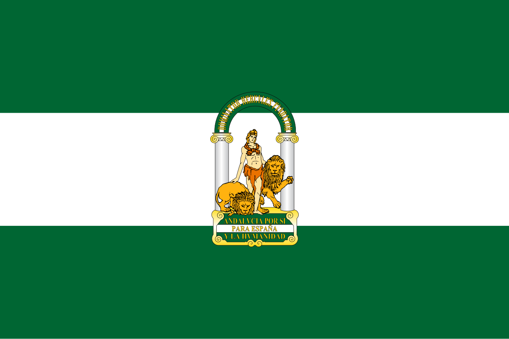
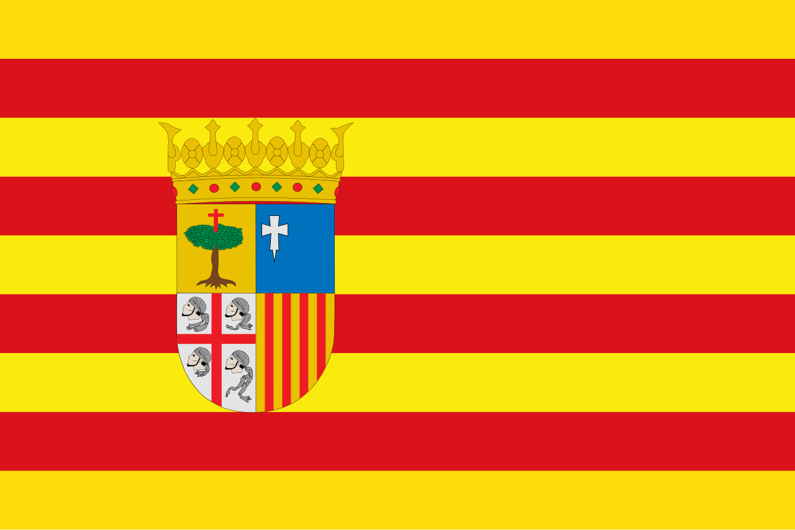
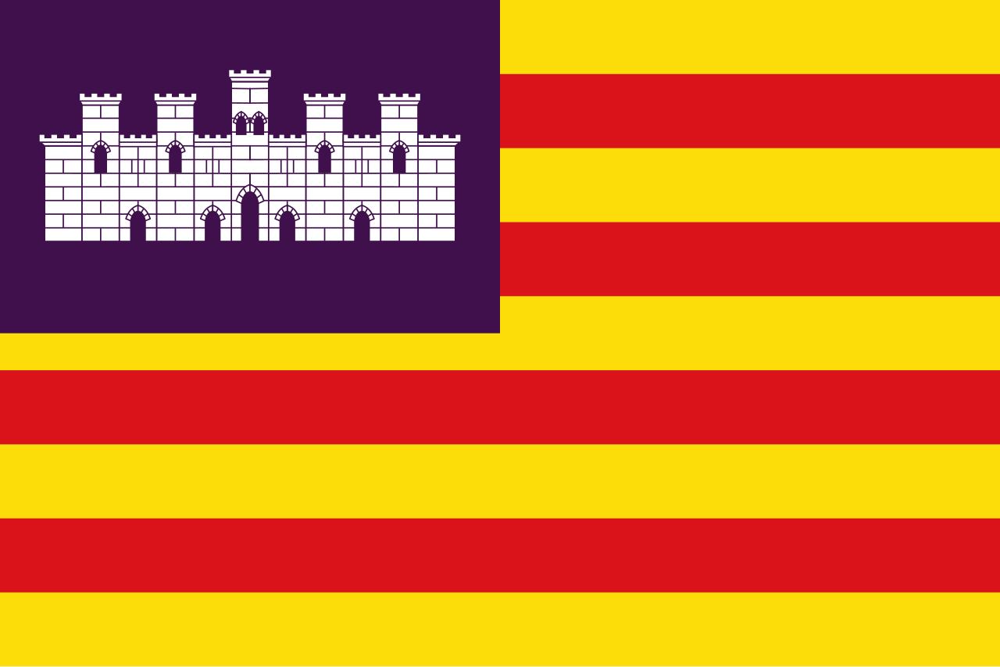
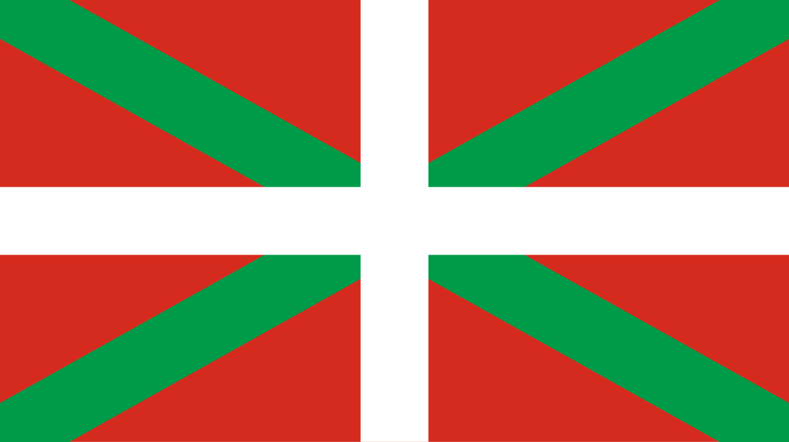
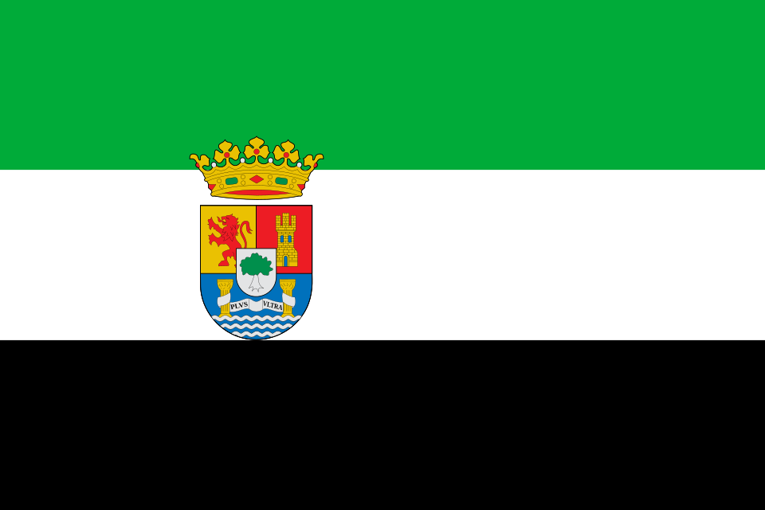
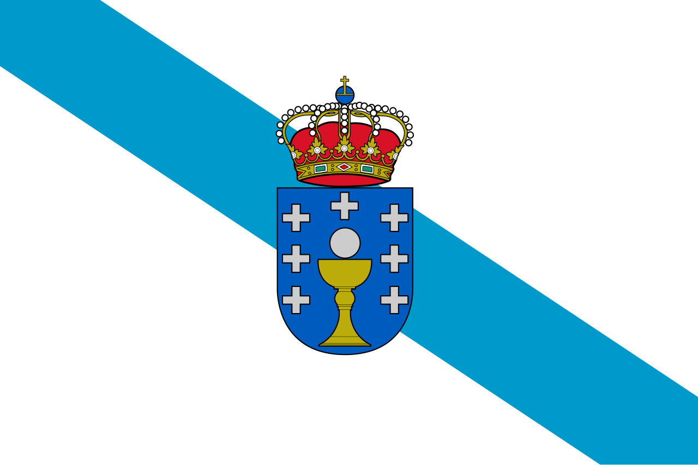

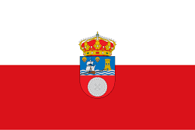


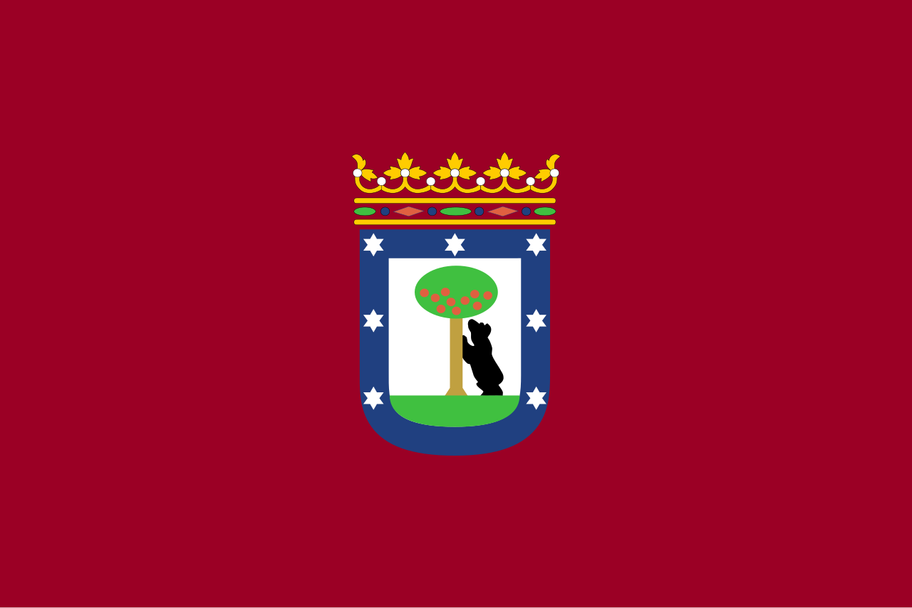
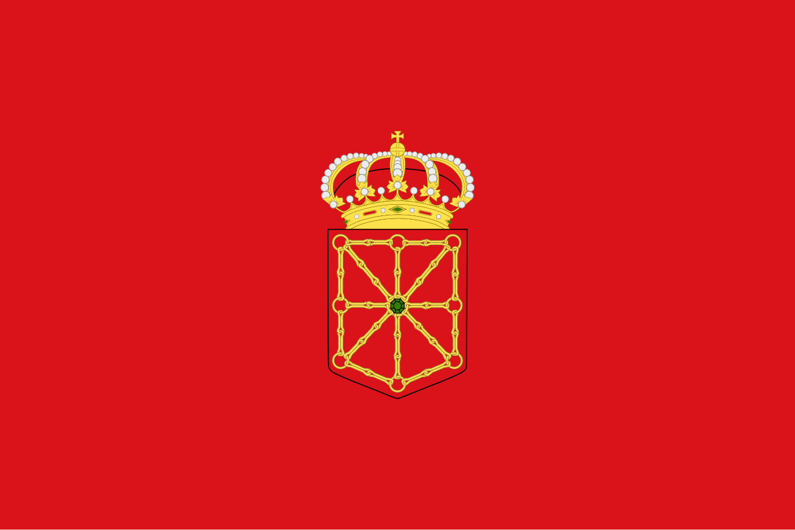
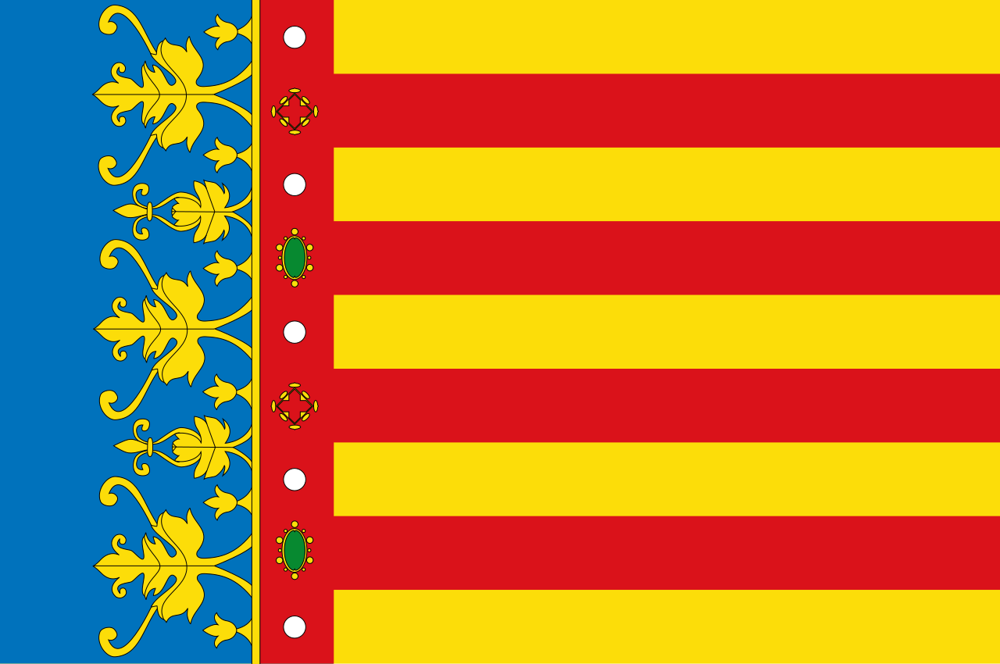
Spanyolország 17 autonóm közösségre oszlik. Ezekhez járul még Ceuta és Melilla is.
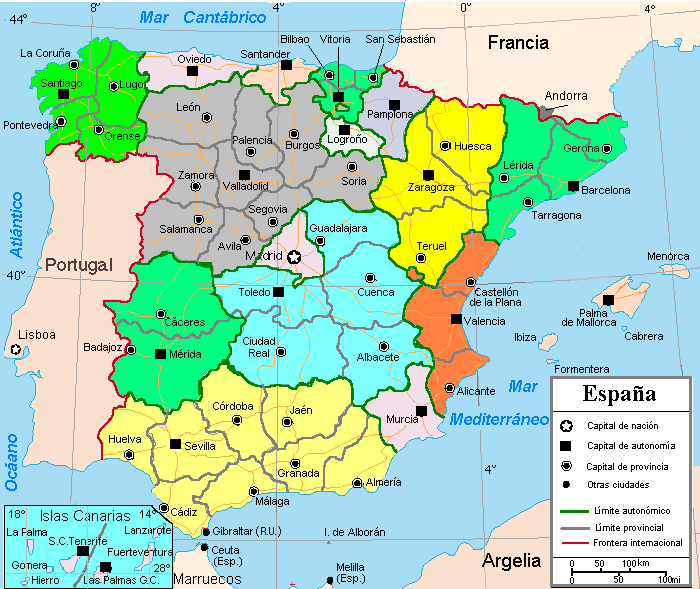
| Zászló | Régió neve | Főváros | Népesség | Terület (km²) | Évi turisták száma |
|---|---|---|---|---|---|
 |
Andalúzia | Sevilla | 8 500 000 | 87 268 | 30 000 000 |
 |
Aragónia | Zaragoza | 1 380 000 | 47 720 | 4 100 000 |
| Asztúria | Oviedo | 1 000 000 | 10 604 | 2 500 000 | |
 |
Baleárok | Palma de Mallorca | 1 250 000 | 4 992 | 15 700 000 |
 |
Baszkföld | Vitoria-Gasteiz | 2 200 000 | 7 234 | 2 100 000 |
 |
Extremadura | Mérida | 1 050 000 | 41 635 | 200 000 |
| Galicia | Santiago de Compostela | 2 700 000 | 29 574 | 1 900 000 | |
|
Kanári-szigetek | Santa Cruz / Las Palmas | 2 300 000 | 7 493 | 15 700 000 |
 |
Kantábria | Santander | 590 000 | 5 321 | 430 000 |
|
Kasztília-La Mancha | Toledo | 2 100 000 | 79 463 | 230 000 |
|
Kasztília és León | Valladolid | 2 400 000 | 94 226 | 1 460 000 |
| Katalónia | Barcelona | 8 100 000 | 32 108 | 20 000 000 | |
|
La Rioja | Logroño | 320 000 | 5 045 | 150 000 |
 |
Madrid | Madrid | 7 000 000 | 8 028 | 9 100 000 |
| Murcia | Murcia | 1 600 000 | 11 314 | 1 210 000 | |
 |
Navarra | Pamplona | 680 000 | 10 391 | 520 000 |
 |
Valencia | Valencia | 5 400 000 | 23 255 | 11 000 000 |